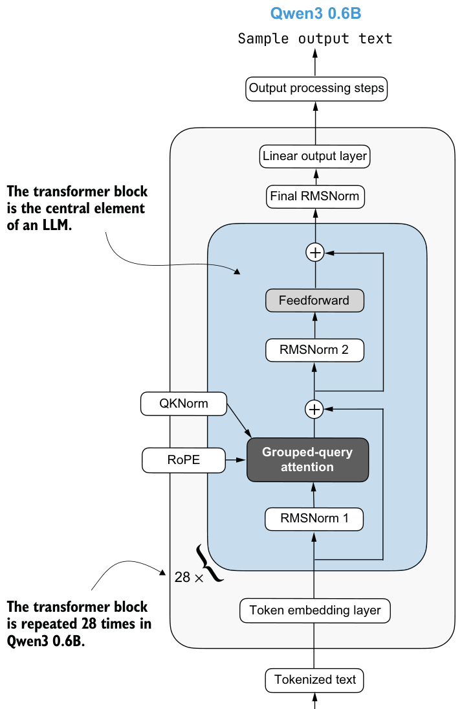
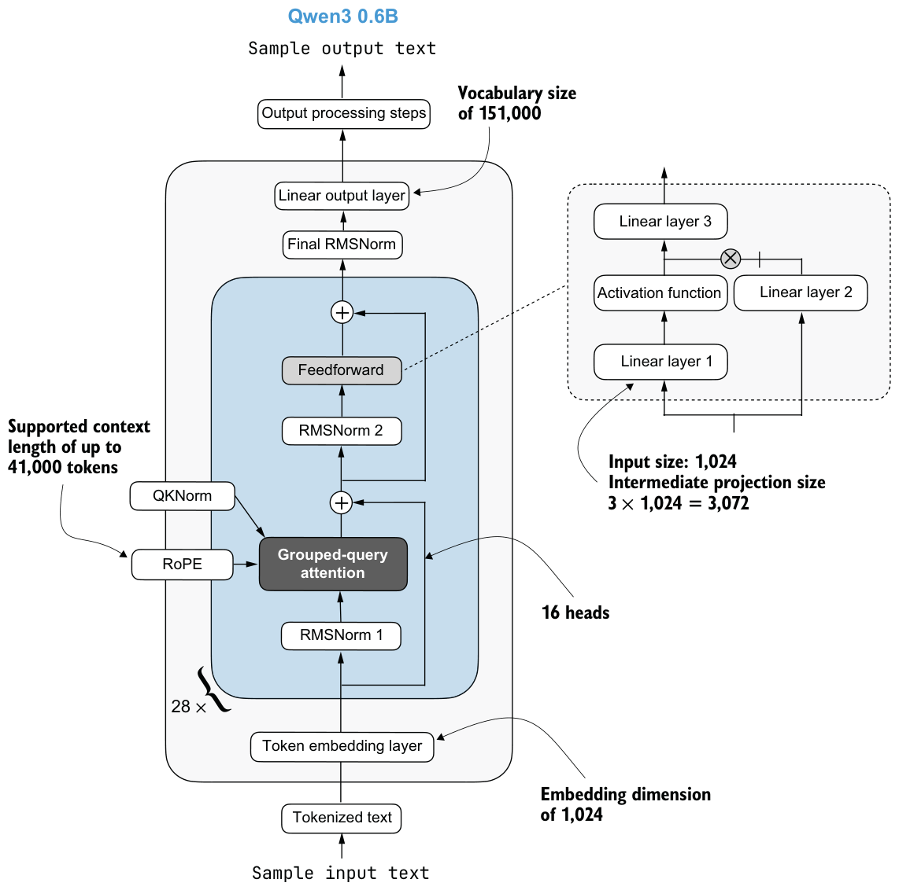

C.5Transformer block
The transformer block is the central component of an LLM, combining all the individual elements covered in this appendix so far. As shown in figure C.6, it is repeated multiple times; in the 0.6B-parameter version of Qwen3, it appears 28 times.

Sample input textthe 0.6B-parameter model.
Listing C.5 implements the transformer block shown in figure C.6.
class TransformerBlock(nn.Module):
def __init__(self, cfg):
super().__init__()
self.att = GroupedQueryAttention(
d_in=cfg["emb_dim"],
num_heads=cfg["n_heads"],
head_dim=cfg["head_dim"],
num_kv_groups=cfg["n_kv_groups"],
qk_norm=cfg["qk_norm"],
dtype=cfg["dtype"]
)
self.ff = FeedForward(cfg)
self.norm1 = RMSNorm(cfg["emb_dim"], eps=1e-6)
self.norm2 = RMSNorm(cfg["emb_dim"], eps=1e-6)
def forward(self, x, mask, cos, sin, start_pos=0, cache=None):
shortcut = x
x = self.norm1(x)
x, next_cache = self.att(
x, mask, cos, sin, start_pos=start_pos,cache=cache
)
x = x + shortcut
shortcut = x
x = self.norm2(x)
x = self.ff(x)
x = x + shortcut
return x, next_cacheAs you can see in the listing, the transformer block simply connects the various elements we implemented in previous sections.
C.6Main model code
In this section, we’ll define the Qwen3Model class that we imported and used in chapter 2.
To implement the Qwen3Model class, the following listing follows the architecture shown in figure C.6, with the transformer block at the heart of the LLM.
class Qwen3Model(nn.Module):
def __init__(self, cfg):
super().__init__()
# Main model parameters
self.tok_emb = nn.Embedding(cfg["vocab_size"], cfg["emb_dim"],
dtype=cfg["dtype"])
self.trf_blocks = nn.ModuleList(
[TransformerBlock(cfg) for _ in range(cfg["n_layers"])]
)
self.final_norm = RMSNorm(cfg["emb_dim"])
self.out_head = nn.Linear(
cfg["emb_dim"], cfg["vocab_size"],
bias=False, dtype=cfg["dtype"]
)
# Reusable utilities
if cfg["head_dim"] is None:
head_dim = cfg["emb_dim"] // cfg["n_heads"]
else:
head_dim = cfg["head_dim"]
cos, sin = compute_rope_params(
head_dim=head_dim,
theta_base=cfg["rope_base"],
context_length=cfg["context_length"]
)
self.register_buffer("cos", cos, persistent=False)
self.register_buffer("sin", sin, persistent=False)
self.cfg = cfg
self.current_pos = 0 # Track current position in KV cache
def forward(self, in_idx, cache=None):
tok_embeds = self.tok_emb(in_idx)
x = tok_embeds
num_tokens = x.shape[1]
if cache is not None:
pos_start = self.current_pos
pos_end = pos_start + num_tokens
self.current_pos = pos_end
mask = torch.triu(
torch.ones(
pos_end, pos_end, device=x.device, dtype=torch.bool
),
diagonal=1
)[pos_start:pos_end, :pos_end]
else:
pos_start = 0 # Not strictly necessary but helps torch.compile
mask = torch.triu(
torch.ones(num_tokens, num_tokens, device=x.device,
dtype=torch.bool),
diagonal=1
)
mask = mask[None, None, :, :]
for i, block in enumerate(self.trf_blocks):
blk_cache = cache.get(i) if cache else None
x, new_blk_cache = block(x, mask, self.cos, self.sin,
start_pos=pos_start,
cache=blk_cache)
if cache is not None:
cache.update(i, new_blk_cache)
x = self.final_norm(x) logits = self.out_head(x.to(self.cfg["dtype"]))
return logits
def reset_kv_cache(self):
self.current_pos = 0We already have all the main ingredients, so the Qwen3Model class in listing C.6 only adds a few more components around the transformer block, namely, the embedding and output layers, including one more RMSNorm layer. The code may still appear somewhat complicated because of the KV cache option.
As discussed in chapter 2, the KV cache can speed up the text generation process, but it is outside the scope of this book. If you are interested, you can learn more about KV caching in my “Understanding and Coding the KV Cache in LLMs from Scratch” article at https://magazine.sebastianraschka.com/p/coding-the-kv-cache-in-llms.
Note that the Qwen3Model class, as implemented in listing C.6, supports various model sizes (as discussed in appendix D). In chapter 2, we use the 0.6B-parameter model because it is the least resource-intensive model in the Qwen3 model family. The configuration of this model is shown in figure C.7.
To use the 0.6B model shown in figure C.7 via the Qwen3Model class, we can define the following configuration and provide it as input (cfg=QWEN_CONFIG_06_B) when instantiating a new Qwen3Model instance.
QWEN_CONFIG_06_B = {
"vocab_size": 151_936, # Vocabulary size
"context_length": 40_960, # Length originally used during training
"emb_dim": 1024, # Embedding dimension
"n_heads": 16, # Number of attention heads
"n_layers": 28, # Number of layers
"hidden_dim": 3072, # Size of intermediate dim in FeedForward
"head_dim": 128, # Size of the heads in GQA
"qk_norm": True, # Whether to normalize queries & keys in GQA
"n_kv_groups": 8, # Key-Value groups for GQA
"rope_base": 1_000_000.0, # The base in RoPE's "theta"
"dtype": torch.bfloat16, # Lower-precision dtype to reduce memory
}We will use the QWEN_CONFIG_06_B configuration from listing C.7 to instantiate the Qwen3 0.6B model in section C.9.
More precise context-length information
Sample output textSample input text
C.7KV cache
The KV-cache-related heavy lifting is mostly done in the Qwen3Model (listing C.6) and GroupedQueryAttention (listing C.4) code. The KVCache, shown in the following listing, stores the key-value pairs during text generation, which results in the speedup we experienced when enabling KV caching in chapter 2.
class KVCache:
def __init__(self, n_layers):
self.cache = [None] * n_layers
def get(self, layer_idx):
return self.cache[layer_idx]
def update(self, layer_idx, value):
self.cache[layer_idx] = value
def get_all(self):
return self.cache
def reset(self):
for i in range(len(self.cache)):
self.cache[i] = NoneThis KVCache class is used inside the generate_text_basic_stream_cache function that we implemented in chapter 2.